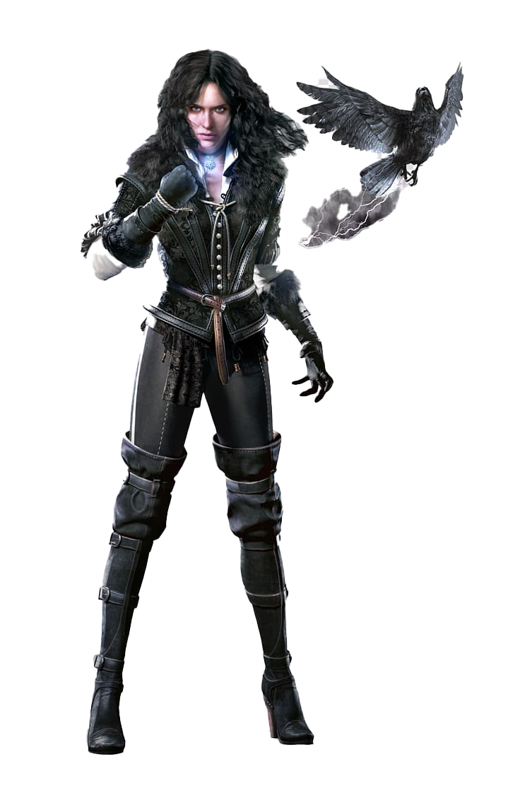
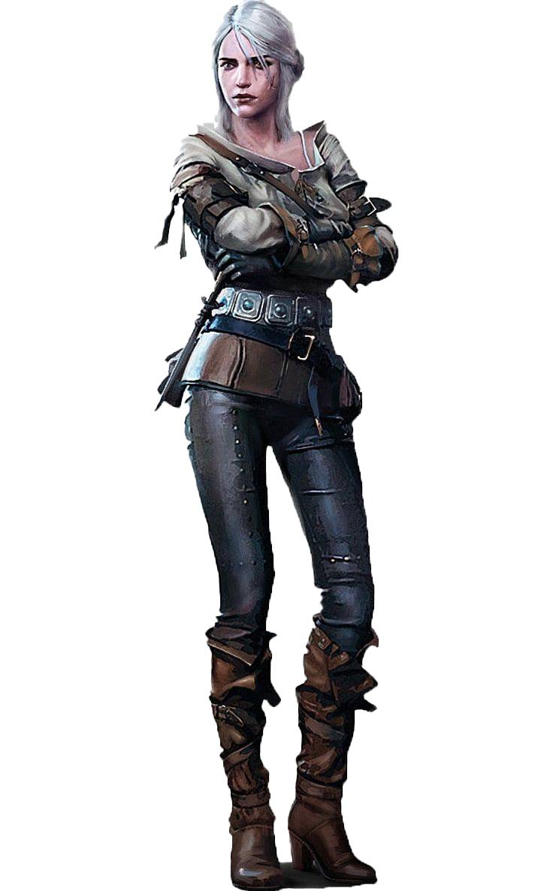

Ґеральт із Рівії, також відомий як «Білий Вовк» та «М'ясник з Блавікену» (пол. Geralt z Rivii; англ. Geralt of Rivia) — головний герой літературного циклу, написаного Анджеєм Сапковським і його адаптацій, в тому числі відеоігор «Відьмак», «Відьмак 2: Вбивці Королів» і «Відьмак 3: Дикий Гін». Як і всі відьмаки, Ґеральт — стерильний мутант, професійний мисливець на чудовиськ за наймом. Мав надлюдські фізичні здібності, можливість використовувати базову магію і добре розвинуті уміння у фехтуванні, через які його можна вважати одним із найкращих фехтувальників свого часу.
Йеннефер із Венґерберґу (пол. Yennefer z Vengerbergu) — одна з головних героїнь літературного циклу, написаного Анджеєм Сапковським та його адаптацій, зокрема відеоігор «Відьмак 2: Вбивці Королів» та «Відьмак 3: Дикий Гін». Видатна чародійка з Едірну, наймолодший член Капітулу Чародіїв, пізніше, новоствореної Ложі Чародійок. Кохана відьмака Ґеральта із Рівії та прийомна мати цінтрійської княжни Цірілли Фіони, колишня радниця короля Демавенда III, а ще близька подруга Трісс Мерігольд.
Цірілла Фіона Елен Ріаннон, відома як «Цірі» (пол. Ciri) — головна героїня літературного циклу, написаного Анджеєм Сапковським і його адаптацій, в тому числі відеогри Відьмак 3: Дикий Гін. Донька імператора Нільфгарду Емгира вар Емрейса і цінтрійської принцеси Паветти. Нащадок Лари Доррен еп Шіадаль, що володіє унікальними здібностями, завдяки яким може подорожувати у часі та просторі.